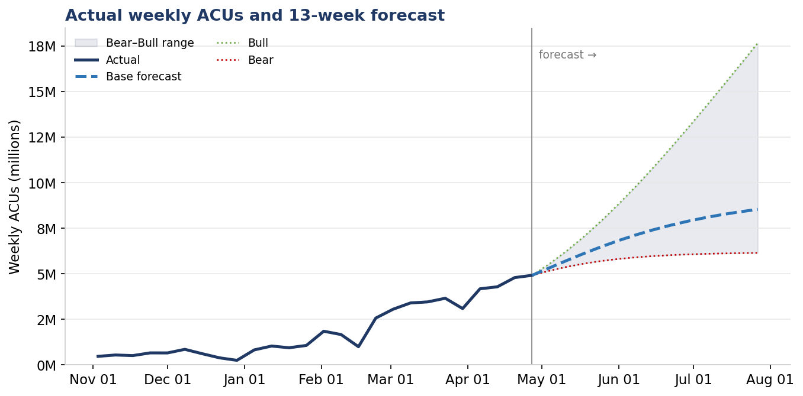
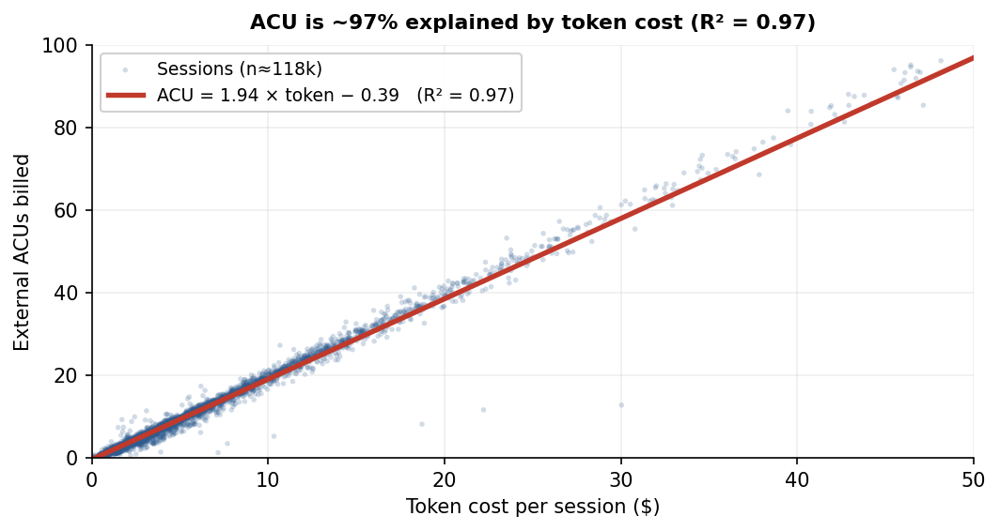

Onsite — GTM Operations
Case Study Presentation
Usage Forecast & Account Targets
Summary
It is an account×product weekly model (719 series): each account is projected from its own recent momentum, capped and faded. Out-of-sample backtesting puts near-term error at 17% (1-week) and 25% (4-week) — better than a trailing-average method and a naive baseline. The quarter-end is shown as a range (July 24.5M–63.6M) because consumption volatility is genuinely high.
Model
- Grain: enterprise × product × week, anchored to each account's last actual week (forecast is continuous off 4.92M).
- Growth: exponentially-weighted recent week-over-week, capped at +12% / −15%, faded 15%/week toward maturity.
- Scenarios: bear / base / bull flex the growth cap and decay, bracketing a realistic range rather than implying false precision.
- Data: 26 weeks cleaned to 7,781 valid rows across 571 enterprises; enterprise_id is the key (~27% of rows lack a Salesforce ID).
Forecast output
| Month | Base Forecast | Devin | CLI | Windsurf | Sales/CS Target |
|---|---|---|---|---|---|
| May 2026 | 23.7M | 20.8M | 449k | 2.5M | 26.0M |
| June 2026 | 37.0M | 32.4M | 692k | 3.8M | 40.6M |
| July 2026 | 33.3M | 29.2M | 616k | 3.5M | 36.6M |

Growth is led by Devin (~88% of volume), with Windsurf the fastest-growing minority product. June has five forecast week-starts versus four in May and July, so month-to-month totals should be normalized to weekly run-rate before driving quota.
Goal-setting framework
The forecast is the baseline target; a stage stretch is layered on to set the sales/CS goal. Targets are owned per account, rolled up to 10 AEs, and tracked monthly against actuals. The lever differs by stage: for Production, the goal is a hard ACU consumption number. For earlier stages — Demo, POC, UAT — the most important outcome is moving the account to the next phase, not an ACU quota; phase progression is the leading indicator and consumption follows. So pre-Production accounts carry a milestone goal (“move to next phase”), with ACUs tracked but not quota’d; accounts with prior usage but no current signal default to ~1.1× recent actuals so reps still have a number.
Incentives should reward that behavior: a blend of milestone-based commission (stage advancement and key activations), ACU-consumption commission (the core lever for Production), and activation-based commission (a per-seat reward for each newly activated user) — surfaced on a real-time dashboard visible across the whole sales org, and extended beyond AEs to Forward-Deployed Engineers and CS, who drive activation and expansion.
Accuracy
Accuracy is measured out-of-sample at the weekly-total level, volume-weighted (WAPE), because the top 10 accounts are 69% of volume. The selected model lands at 17% (1-week) and 25% (4-week) error, beating a trailing-average method (23% / 26%) and a naive random walk (17% / 36%).
Key trends
| Trend | Evidence | GTM implication |
|---|---|---|
| Revenue is concentrated | Top 1 / 5 / 10 accounts = 21.6% / 52.3% / 69.1% of recent volume. | Safeguarding revenue starts with the top 10 — manage them individually, by name. |
| Revenue is volatile, driven by big accounts | The top-10 accounts swing ~±80% week-to-week vs ~±41% for everyone else; ~60% of each weekly swing comes from just 3 accounts. | Dampen volatility by graduating large accounts into Production (a steadier stage) and growing a mid-market base. |
| Product mix is broadening | Devin 100% → 87.8% of volume; non-Devin 6.9% → 12.2% over 8 weeks; multi-product accounts 0 → 166. | Build a per-product success journey, not a Devin-only motion. |
| Breadth and intensity both grow | Active accounts 222 → 416; usage per account 10k → 44k. | Study the “happy accounts” — why activation spread across their teams and orgs — and replicate it. |
Operating cadence
- Refit weekly — the model is built to be re-run as new actuals land; targets and scenarios update with it.
- Review the top-10 accounts individually; at 69% of volume they drive both the forecast and its risk.
Customer A Renewal
Summary. Customer A’s current contract ends June 2027; this memo covers the renewal that takes effect July 2027. Customer A is our single largest and most strategic account. It is also cheap to serve, at $0.59/ACU, so even the flat $1.50/ACU the customer is pushing for still earns ~61% gross margin. Approving $1.50 is therefore not the end of the world. We recommend conceding toward $1.50 only in exchange for term, commitment, and growth. Two structures follow: a 5-year lock-in (“Play the Long Game”) and a 12-month volume deal (“A Good Compromise”).
1. Margin analysis — current vs. proposed
Today’s unit economics (April 2026 actuals) frame the trade-off: cost to serve is only $0.59/ACU, so break-even sits far below either rate and $1.50 is still ~2.5× cost. The discount is a margin-share decision, not a viability one.
| Scenario (April 2026 actuals) | Monthly Rev | Gross Margin $ | GM % | Blended $/ACU |
|---|---|---|---|---|
| Current ($2.50 in-cap + $3.00 overage) | $3.43M | $2.65M | 77% | $2.62 |
| Customer ask — flat $1.50 | $1.96M | $1.19M | 61% | $1.50 |
2. Product mix & unmetered products
Customer A is ~100% Devin, so all revenue rides one SKU with no diversification cushion. Review and Ask/DeepWiki are set to a 0 scalar (free) and unused today, so they create no margin drag now; they are a forward cost risk as the account scales and an unused expansion lever we can trade for rate or commitment rather than give away silently.
3. Benchmarking against the portfolio
Among comparable accounts (Majors, Devin-heavy), the median effective rate is $2.50/ACU; $1.50 would place Customer A near the bottom decile. Their cost to serve is below the cohort median, so there is no cost basis for pricing them under peers. They are already the #1 account in the portfolio — which is why the rate we set here will echo across every other negotiation.
4. Recommendation: modify (approval is acceptable; negotiate first)
We recommend modify. At 61% margin even on flat $1.50, approving the ask is defensible and not dangerous — the deal team should feel they have room. But we should still negotiate: an unconditional cut forfeits a large share of margin and anchors future renewals to our lowest rate, while outright rejection risks a large, efficient, growing account over a discount we can afford. The right path is to grant a $1.50 (or lower marginal) rate in return for a multi-year commitment and volume.
5. Two recommended structures
We propose two structures — pick based on whether we prioritize certainty (lock-in) or balanced margin:
| Option | Structure | Modeled economics | Margin |
|---|---|---|---|
| Option 1“Play the Long Game” | 5-year term (Jul ’27–Jun ’32). Flat $1.50/ACU + annual minimum commitments set at our conservative base forecast. | ~$472M 5-yr contracted floor; protected through 2032. | 61% |
| Option 2“A Good Compromise” | Standard 12-month term (Jul ’27–Jun ’28). Volume-graduated rate: first 1M ACU/mo @ $2.50; 1–2M @ $2.00; 2–4M @ $1.75; above 4M @ $1.50. | Year-1 revenue ≈ $125M (blended ≈ $1.86/ACU). | 68% |
Sized against our base case, here is base-case gross profit by year. The key contrast is the contract horizon: only Option 1 is multi-year — every 12-month approach (including the customer’s flat $1.50 ask) is uncontracted from Year 2, leaving that gross profit exposed to renegotiation.
| Deal Year (base case) | ACU usage | GM $ Current rate* | GM $ $1.50 | GM $ Opt 1 (Long Game) | GM $ Opt 2 (Compromise) |
|---|---|---|---|---|---|
| Y1 (Jul ’27–Jun ’28) | 67.2M | $155.8M | $61.0M | $61.0M | $85.0M |
| Y2 (Jul ’28–Jun ’29) | 66.2M | Not contracted | Not contracted | $60.1M | Not contracted |
| Y3 (Jul ’29–Jun ’30) | 63.3M | Not contracted | Not contracted | $57.4M | Not contracted |
| Y4 (Jul ’30–Jun ’31) | 60.3M | Not contracted | Not contracted | $54.8M | Not contracted |
| Y5 (Jul ’31–Jun ’32) | 57.5M | Not contracted | Not contracted | $52.2M | Not contracted |
6. Long-term strategy for this account
- Tie pricing to commitment and growth, not hope.
- Land-and-expand on dormant orgs. About a third of their orgs are near-dormant. Growth should come from adoption. Pricing is only a small part of the strategy: a modest rate on a fully-adopted account beats a premium rate on a stalling one.
- Token-based costs are volatile — build protection into the deal. Input costs can move sharply in either direction, so we shouldn’t bet the account’s economics on them holding still. Margin sensitivity analysis (Option 1 at $1.50, Year 1):
| If our cost/ACU… | 1-yr gross margin $ | Margin % |
|---|---|---|
| stays at today’s $0.59 | $61M | 61% |
| rises to $1.00 | $34M | 33% |
| falls to $0.25 | $84M | 83% |
- Leadership-owned floor. Set the absolute lowest rate we will ever offer centrally (e.g., never below $1.00/ACU), not left to individual reps — this account sets the precedent for the whole book.
- Don’t over-rely on contractual lock-in. If prices fall, customers push to renegotiate regardless of what they signed, and you can’t force consumption — minimums signal intent but don’t substitute for delivered value.
- Build in cost-protection terms. Retain the right to serve discounted contracts on a constrained, cheaper model set (e.g., lean on lower-cost models like DeepSeek; reserve the most advanced Claude models for higher tiers) so margin is defensible if input costs rise.
Pricing: ACU vs. Tokens
Summary: Today the ACU is ~just repackaged token cost (ACU ≈ 1.94 × token cost − 0.39; R² = 0.97) — the “ECU camp,” where a proprietary unit adds little. The answer is not to surrender to tokens, which are commoditizing and would make Devin a replaceable utility, but to invest in product depth that grows the non-LLM share until the ACU is a true value-based unit like Snowflake’s credit or Databricks’ DBU. This is a roadmap decision, not a pricing one.
Today, the ACU is essentially repackaged token cost
Across ~118k April sessions, ACU ≈ 1.94 × token cost − 0.39 (R² = 0.97); the fit holds across customers, channels, and workloads, and cost is ~86% tokens / ~14% VM. On current economics the ACU abstracts little that tokens don’t already capture — weak standalone defensibility.

But tokens are commoditizing — pricing on them erodes our premium
Flagship token prices are in free-fall (GPT-4o −50% in five months; DeepSeek −50%+ in 2025) and converging toward a utility. Billing in tokens anchors our value to a shrinking, directly comparable commodity — inviting price-shopping and making Devin look like a metered LLM reseller rather than a premium platform.
The real question is product, not pricing
Keeping the ACU is only defensible if real product work grows the non-LLM share and moves us beyond “a better UI on top of an LLM.” Snowflake and Databricks earned their proprietary units that way; Amazon’s ECU, which didn’t, was retired for vCPU. Pricing should follow that product bet.
| Token-based pricing | ACU — keep & build into a value unit | |
|---|---|---|
| Pros |
|
|
| Cons |
|
|
| Precedent |
|
Snowflake (credits) & Databricks (DBU) — proprietary units worked because they abstract real, varied value — the bar we must clear. |
Bottom line: Keep the ACU and commit to the product roadmap that justifies it. If we can’t make that investment, we’re an ECU — and tokens would be the honest unit. Track success by re-running this regression quarterly: the non-LLM share should rise well above ~14%.